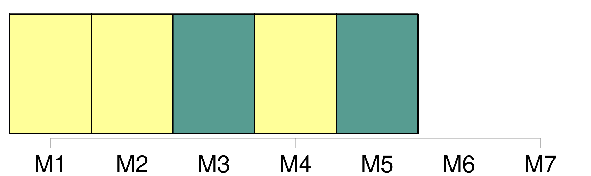
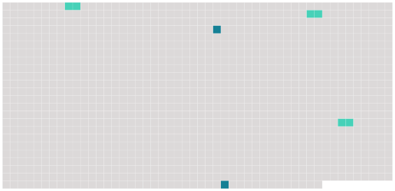

Longueur nb maillons : 5 mentions |
 |
Cette mission est accomplie par la voie de [l'enseignement] et de la recherche au niveau universitaire le plus élevé. [3 phrases]
Les Etats contractants prennent toutes les mesures propres à faciliter l'accomplissement de la mission de l'Institut, dans le respect de la liberté de la recherche et de [l'enseignement] [4 phrases]
Dans le cadre de ses compétences, l'Institut coopère avec les universités et tous les organismes d' [enseignement] et de recherche nationaux ou internationaux désireux de lui prêter leur concours ; il peut conclure des accords avec des Etats et des organismes internationaux. [17 phrases]
Statuant à la majorité qualifiée, le conseil supérieur prend les décisions autres que celles prévues au paragraphe 5, notamment celles qui concernent : [25 phrases]
Le conseil académique possède une compétence générale en matière de recherche et d' [enseignement] , sans préjudice des compétences des autres organes de l'Institut. |
 |
Il est possible de télécharger la ressource sur la page Ortolang |
Si vous avez des questions ou vous voyez des erreurs, merci d'envoyer un mail à silvia.federzoni89@gmail.com |